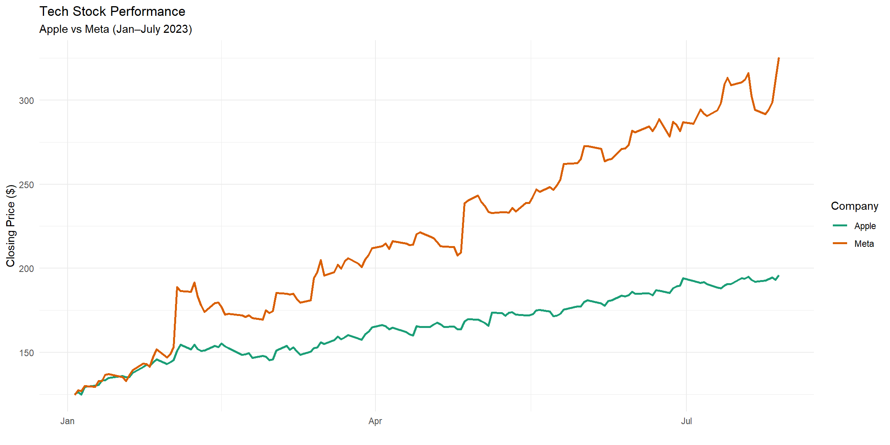
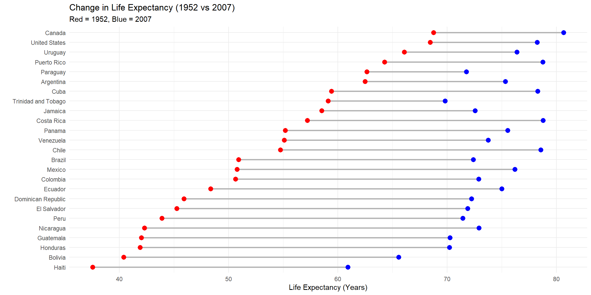
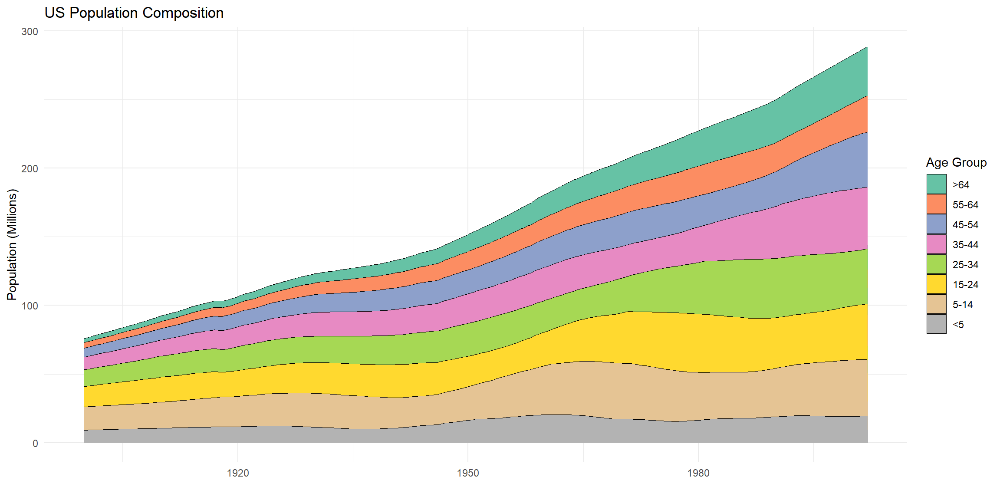

A graph is a powerful vehicle for displaying change. While standard bar charts compare static categories, time-dependent graphs capture the motion of data.
In this chapter, we move beyond simple line charts to explore more sophisticated ways to visualize temporal change.
Time Series
A time series is a sequence of observations indexed in time order.
Simple Time Series
Math to Code Mindset
Input: Time \(t\) and value \(y\)
Transformation: Sort by \(t\)
Output: Line segments connecting consecutive points
Dates must be stored as Date or POSIXct objects. Text values are sorted alphabetically, not chronologically.
Multivariate Time Series
Code
library(quantmod)library(dplyr)getSymbols(c("AAPL", "META"), from ="2023-01-01", to ="2023-07-31")
[1] "AAPL" "META"
Code
mseries <-bind_rows(data.frame(Date =index(AAPL), Close =as.numeric(AAPL$AAPL.Close), Company ="Apple"),data.frame(Date =index(META), Close =as.numeric(META$META.Close), Company ="Meta"))ggplot(mseries, aes(x = Date, y = Close, color = Company)) +geom_line(linewidth =1) +scale_color_brewer(palette ="Dark2") +labs(title ="Tech Stock Performance",subtitle ="Apple vs Meta (Jan–July 2023)",y ="Closing Price ($)",x ="") +theme_minimal()

Dumbbell Charts
A dumbbell chart visualizes change between two time points.
Math to Code Mindset
Input: Category and two values
Transformation: Pivot to wide format
Output: A segment plus two points
Code
library(tidyr)data(gapminder, package ="gapminder")plotdata <- gapminder %>%filter(continent =="Americas", year %in%c(1952, 2007)) %>%select(country, year, lifeExp) %>%pivot_wider(names_from = year, values_from = lifeExp, names_prefix ="y")ggplot(plotdata, aes(y =reorder(country, y1952))) +geom_segment(aes(x = y1952, xend = y2007, yend =reorder(country, y1952)),color ="grey70",linewidth =1) +geom_point(aes(x = y1952), color ="red", size =3) +geom_point(aes(x = y2007), color ="blue", size =3) +labs(title ="Change in Life Expectancy (1952 vs 2007)",subtitle ="Red = 1952, Blue = 2007",x ="Life Expectancy (Years)",y ="") +theme_minimal()

Slope Graphs (ggplot-only)
Slope graphs track relative position across discrete time points.
Key idea:
Fix the x-position to time, and the y-position to rank.
Crossing lines indicate rank reversals — for example, Guatemala overtakes Honduras in the early 2000s.
Area Charts
Area charts emphasize magnitude by filling the area beneath a line.
Stacked Area Charts
Code
data(uspopage, package ="gcookbook")ggplot(uspopage,aes(x = Year, y = Thousands /1000, fill = forcats::fct_rev(AgeGroup))) +geom_area(color ="black", linewidth =0.2) +scale_fill_brewer(palette ="Set2") +labs(title ="US Population Composition",y ="Population (Millions)",fill ="Age Group",x ="") +theme_minimal()

Stream Graphs
A stream graph is a centered stacked area chart. Instead of stacking values from zero upward, the entire stack is recentered around a moving baseline, reducing visual bias caused by accumulation from the bottom.
A stream graph is not a new chart type — it is a stacked area chart with a moving, centered baseline.
The widening of upper bands toward the right visualizes the aging of the US population.
Source Code
---title: "Visualizing Time"format: html: fig-width: 12 fig-height: 6 code-fold: show code-tools: true code-block-bg: true code-block-border-left: "#31BAE9" toc: true code-copy: true number_sections: true echo: fenced---A graph is a powerful vehicle for displaying change. While standard bar charts compare static categories, time-dependent graphs capture the *motion* of data.In this chapter, we move beyond simple line charts to explore more sophisticated ways to visualize temporal change.# Time SeriesA time series is a sequence of observations indexed in time order.## Simple Time Series::: {.callout-tip title="Math to Code Mindset"}* **Input:** Time $t$ and value $y$* **Transformation:** Sort by $t$* **Output:** Line segments connecting consecutive points:::```{r}#| echo: true #| message: false#| warning: falselibrary(ggplot2)library(scales)ggplot(economics, aes(x = date, y = psavert)) +geom_line(color ="indianred3", linewidth =1) +geom_smooth(method ="loess", se =FALSE) +scale_x_date(date_breaks ="5 years", labels =date_format("%b-%y")) +labs(title ="Personal Savings Rate (1967–2015)",y ="Savings Rate",x ="") +theme_minimal()```:::{.callout-important}Dates must be stored as `Date` or `POSIXct` objects.Text values are sorted alphabetically, not chronologically.:::## Multivariate Time Series```{r}#| echo: true #| message: false#| warning: falselibrary(quantmod)library(dplyr)getSymbols(c("AAPL", "META"), from ="2023-01-01", to ="2023-07-31")mseries <-bind_rows(data.frame(Date =index(AAPL), Close =as.numeric(AAPL$AAPL.Close), Company ="Apple"),data.frame(Date =index(META), Close =as.numeric(META$META.Close), Company ="Meta"))ggplot(mseries, aes(x = Date, y = Close, color = Company)) +geom_line(linewidth =1) +scale_color_brewer(palette ="Dark2") +labs(title ="Tech Stock Performance",subtitle ="Apple vs Meta (Jan–July 2023)",y ="Closing Price ($)",x ="") +theme_minimal()```# Dumbbell ChartsA dumbbell chart visualizes **change between two time points**.::: {.callout-tip title="Math to Code Mindset"}* **Input:** Category and two values* **Transformation:** Pivot to wide format* **Output:** A segment plus two points:::```{r}#| echo: true #| message: false#| warning: falselibrary(tidyr)data(gapminder, package ="gapminder")plotdata <- gapminder %>%filter(continent =="Americas", year %in%c(1952, 2007)) %>%select(country, year, lifeExp) %>%pivot_wider(names_from = year, values_from = lifeExp, names_prefix ="y")ggplot(plotdata, aes(y =reorder(country, y1952))) +geom_segment(aes(x = y1952, xend = y2007, yend =reorder(country, y1952)),color ="grey70",linewidth =1) +geom_point(aes(x = y1952), color ="red", size =3) +geom_point(aes(x = y2007), color ="blue", size =3) +labs(title ="Change in Life Expectancy (1952 vs 2007)",subtitle ="Red = 1952, Blue = 2007",x ="Life Expectancy (Years)",y ="") +theme_minimal()```# Slope Graphs (ggplot-only)Slope graphs track **relative position across discrete time points**.Key idea:> Fix the *x-position* to time, and the *y-position* to **rank**.```{r}#| echo: true #| message: false#| warning: falselibrary(forcats)df_slope <- gapminder %>%filter(year %in%c(1992, 1997, 2002, 2007),country %in%c("Panama", "Costa Rica", "Nicaragua","Honduras", "El Salvador", "Guatemala", "Belize")) %>%group_by(year) %>%mutate(rank =rank(-lifeExp, ties.method ="first")) %>%ungroup() %>%mutate(year =factor(year))ggplot(df_slope, aes(x = year, y = rank, group = country)) +geom_line(color ="grey50", linewidth =1) +geom_point(size =3) +scale_y_reverse(breaks =1:7) +labs(title ="Life Expectancy Rankings",subtitle ="Central America (1992–2007)",x ="Year",y ="Rank (Higher = Better)") +theme_minimal()```::: {.callout-note}Crossing lines indicate **rank reversals** — for example, Guatemala overtakes Honduras in the early 2000s.:::# Area ChartsArea charts emphasize **magnitude** by filling the area beneath a line.## Stacked Area Charts```{r}#| echo: true #| message: false#| warning: falsedata(uspopage, package ="gcookbook")ggplot(uspopage,aes(x = Year, y = Thousands /1000, fill = forcats::fct_rev(AgeGroup))) +geom_area(color ="black", linewidth =0.2) +scale_fill_brewer(palette ="Set2") +labs(title ="US Population Composition",y ="Population (Millions)",fill ="Age Group",x ="") +theme_minimal()```# Stream Graphs A stream graph is a **centered stacked area chart**.Instead of stacking values from zero upward, the entire stack is **recentered around a moving baseline**, reducing visual bias caused by accumulation from the bottom.## From Stacked Areas to Streams::: {.callout-tip title="Math to Code Mindset"}* **Input:** Time $t$, group $g$, value $y_{tg}$* **Normalize:** $p_{tg} = y_{tg} / \sum_g y_{tg}$* **Stack:** cumulative sums within each $t$* **Recenter:** shift stack midpoint to zero* **Output:** Filled ribbons around a central baseline:::---## Data Transformation```{r}#| echo: true #| message: false#| warning: falselibrary(dplyr)stream_data <- uspopage %>%group_by(Year) %>%mutate(prop = Thousands /sum(Thousands),ymax =cumsum(prop),ymin = ymax - prop) %>%ungroup() %>%group_by(Year) %>%mutate(center = (max(ymax) +min(ymin)) /2,ymin = ymin - center,ymax = ymax - center)```### What this does mathematicallyFor each year:1. Convert population counts to **proportions**2. Stack age groups using cumulative sums3. Compute the vertical midpoint of the stack4. Shift the entire stack so its midpoint is zeroThis removes the fixed baseline that causes distortion in stacked area charts.---## Stream Graph Rendering ```{r}#| echo: true #| message: false#| warning: falseggplot(stream_data) +geom_ribbon(aes(x = Year,ymin = ymin,ymax = ymax,fill = forcats::fct_rev(AgeGroup)),color ="black",linewidth =0.15) +scale_fill_brewer(palette ="Set2") +labs(title ="US Population Demographics",subtitle ="Stream graph constructed from centered stacked areas",y ="Centered Proportion",x ="Year",fill ="Age Group") +theme_minimal()```---::: {.callout-note}A stream graph is **not a new chart type** — it is a stacked area chart with a **moving, centered baseline**.:::The widening of upper bands toward the right visualizes the aging of the US population.